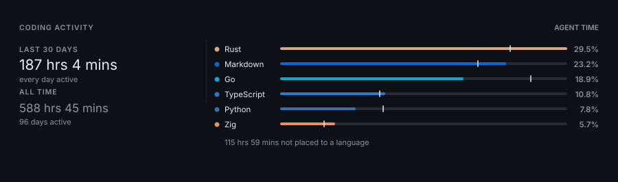
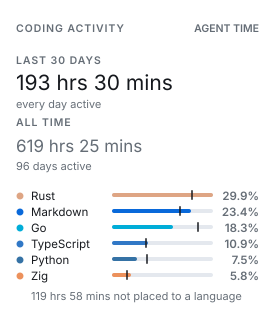

Coding activity
How long the work took, what wrote it, and which models did — as a card or a chart.
Coding Activity#
Every card above is drawn from your GitHub profile, which knows what you pushed and nothing about how it came to be. This is the other half: how long the work took, what wrote it, and which models did. It is read from records your own machine already keeps, so it needs no account with anybody and no service running in the cloud.
It comes out in two shapes. A card, for a README that is mostly pictures:

And a chart, for a README that is mostly words:
LINES BY LANGUAGE
Total +115,987 lines, 99.94% by an agent
Rust +34,255 ######################### 29.53 %
Markdown +26,925 ####################----- 23.21 %
Go +21,869 ################--------- 18.85 %
TypeScript +12,556 #########---------------- 10.82 %
Python +8,995 #######------------------ 7.75 %
Zig +6,585 #####-------------------- 5.67 %Both read the same collected record through the same fold, so they can sit on one page without disagreeing. Nothing here is fetched: the card is the only one in this project that renders with no token, no saved profile and no network at all.
Every figure on this page comes from a sample record rather than anybody's real one, the same way the other cards are drawn from examples/showcase.json. Rebuild all of it with python3 scripts/render-activity-samples.py.
The card#
github-personal-stats generate --card activity \
--activity-record ~/.local/state/github-personal-stats/record \
--width 900 --height auto \
--output profile/activity.svgTwo spans are named on the left, the recent one leading. Under each is how much of that span recorded anything at all, which is not decoration: a span reaching further back than your record does would otherwise read as an idle stretch rather than an unobserved one.
On the right, a bar is the recent window and the mark across it is where the longer span put the same language. A language you have picked up lately reads as a bar past its own mark, and one you have left behind as a bar short of it. The line underneath is the time no language could be put to, which on a real record is most of it — see How time is measured.
The card fits a tile as well as a header. Below 440px it stacks, and when two spans are too long to share a line it gives them one each, because 588 hrs 45 mins needs half again the room of 9 hrs 2 mins:
--width 900 --theme lightA row of a dashboard
--width 900 --theme dark
The same card on a dark surface
--width 275
Spans stacked, names measured to fit
The chart#
Update a marked README section:
<!--START_SECTION:activity-->
<!--END_SECTION:activity-->github-personal-stats update-readme --section activity --target README.mdPrint the same chart to a terminal instead, which is the quickest way to try a configuration:
github-personal-stats chart --activity-record <your record>With nothing configured you get what was written, who wrote it, and what wrote it:
LINES BY LANGUAGE
Total +115,987 lines, 99.94% by an agent
Rust +34,255 ######################### 29.53 %
Markdown +26,925 ####################----- 23.21 %
Go +21,869 ################--------- 18.85 %
TypeScript +12,556 #########---------------- 10.82 %
Python +8,995 #######------------------ 7.75 %
Zig +6,585 #####-------------------- 5.67 %
LINES BY AUTHOR
Total +115,987 lines, last 30 days
agent +115,925 ######################### 99.94 %
unattributed +62 ------------------------- 0.05 %
LINES BY MODEL
Total +115,925 lines, 99.94% by an agent
claude-opus-5 +37,499 ######################### 32.34 %
gpt-5.6-sol +31,201 #####################---- 26.91 %
gpt-5.5 +24,243 ################--------- 20.91 %
grok-4.6 +14,972 ##########--------------- 12.91 %
unnamed +8,010 #####-------------------- 6.90 %
# agent = unattributed - restWhat the figures mean#
Three different things can be counted, they are measured by different means, and they are not interchangeable. Which one a chart leads with is worth choosing deliberately.
| Value | What it counts | Knows the language | Knows who wrote it |
|---|---|---|---|
lines | Lines the editor watched appear | Yes | Yes |
time | Wall clock while an agent was working | Partly | Yes |
tokens | Tokens the agents were billed for | No | No |
lines is the default because a line is counted rather than inferred. The editor records a row per line as it appears, which is why it can say what language the line was in and which model produced it.
It is also why the figures are additions only, written +115,987 with nothing after them. A line that was deleted stops having a row, so there is nothing left to count and no removal can be reported. That absence is what the source can see rather than a gap waiting to be filled, and reporting removals honestly would mean watching each edit as it happens, which is the editor plugin's job.
unattributed means what it says and no more: no request accounts for these lines. It is not a count of what you typed, and it deliberately does not claim to be. A formatter reformatting a file, a shell command writing one, a terminal agent editing outside the editor and a person typing all land here identically, because the editor recorded that the lines appeared and nothing recorded what produced them. Only a plugin watching each edit as it happens can honestly say a person typed something.
For the same reason, moments where unattributed lines appear across more than a handful of files at once are left out of the count altogether. An edit happens to a file; lines turning up in a hundred files inside one second is the tracker taking inventory of a workspace it has just been pointed at, or a formatter sweeping a tree. Those lines were on disk long before that second, so counting them would credit a month with work done over years, and attribute it to nobody in particular. On one real record the distinction was not marginal: the largest sweep put 47,804 lines across 135 files in a single second, while no other unattributed moment reached beyond four files and no generated edit reached beyond fourteen. Left in, it would have reported 9.75% of a month as not written by an agent, and made one language look a third hand-written.
How time is measured#
Time is the weakest of the figures and the one worth understanding before quoting it.
There is no clock running. What exists is a set of moments — instants at which something was observed happening — and time is the space between consecutive moments, counted when the gap is shorter than the idle timeout (five minutes by default, --idle-timeout). A gap longer than that ends the stretch and is not counted at all. So the figure is only as good as how densely those moments were observed.
Every source's moments go into one timeline before any of this is counted, rather than each source being totalled on its own and the totals added. An afternoon in which an agent worked in your editor while another ran in a terminal is one afternoon, and summing per source would bill it twice.
Reading the terminal agents is what makes the figure defensible. Measured over one month of a real record:
| Minutes with observed activity | |
|---|---|
| Editor only | 8,214 |
| Terminal agents only | 13,150 |
| Together | 21,364 |
More work happened outside the editor's view than inside it. That changes not just the total but its quality — how much of the figure is observation and how much is filling in silence:
| Counted seconds coming from gaps of | Share |
|---|---|
| Under 30 seconds | 79% |
| 30 seconds to 2 minutes | 9% |
| 2 to 5 minutes | 12% |
With the editor alone, over half the total came from gaps above a minute, which is interpolation. With both sources, four fifths of it comes from gaps under half a minute, which is very nearly direct observation. Tightening the idle timeout from five minutes to thirty seconds now changes the monthly total by less than a fifth, which is the useful way to say that the figure is being set by evidence rather than by the length of the silences.
The remaining limitation is that most of those hours cannot be attributed to a language. The terminal agents report when they were working without reporting what they were working on; roughly one in eight of their moments names a file at all, and a file named at one instant says nothing about the minutes around it. So a block of hours by language ranks only the hours it can place, and says how many it could not:
TIME BY LANGUAGE
Total 71 hrs 5 mins last 30 days, 115 hrs 59 mins not placed to a language
Rust 20 hrs 57 mins ######################### 29.48 %
Markdown 16 hrs 30 mins ####################----- 23.22 %
Go 13 hrs 24 mins ################--------- 18.85 %
TypeScript 7 hrs 42 mins #########---------------- 10.84 %
Python 5 hrs 31 mins #######------------------ 7.76 %
Zig 4 hrs 2 mins #####-------------------- 5.68 %That is also why hours are an option on a block rather than the thing a chart leads with. Any breakdown will state the hours behind its figures on request, with time=on:
LINES BY LANGUAGE
Total +115,987 lines, 99.94% by an agent
Rust +34,255 ######################### 29.53 % 20 hrs 57 mins
Markdown +26,925 ####################----- 23.21 % 16 hrs 30 mins
Go +21,869 ################--------- 18.85 % 13 hrs 24 mins
TypeScript +12,556 #########---------------- 10.82 % 7 hrs 42 minsChoosing what the chart says#
A chart is a list of blocks separated by semicolons. Each block is written value/dimension with optional ,setting=value pairs:
--activity-blocks 'lines/languages,limit=8,time=on;lines/authors;tokens/models'Values are lines, time and tokens. Dimensions are languages, models, authors and windows. Not every pairing was measured — nothing records a token against a language or an author — and a block that asks for a pairing nothing measured says nothing recorded rather than inventing a number.
| Setting | Does |
|---|---|
limit=8 | Rows at most, largest first |
time=on | Adds the hours behind each row |
authors=on | Adds the agent's share of each row, as a number beside the bar |
split=off | Draws each bar whole instead of dividing it by author |
title=… | Replaces the heading |
measure=… | Reads a named measure of time rather than the chart's |
Every bar is already divided by author, so its shape says how much of a language an agent wrote. authors=on writes the number beside it, for when the difference between rows is too small to read off twenty-five characters of glyph:
LINES BY LANGUAGE
Total +115,987 lines, 99.94% by an agent
Rust +34,255 ######################### 29.53 % 99.92% agent
Markdown +26,925 ####################----- 23.21 % 99.92% agent
Go +21,869 ################--------- 18.85 % 99.93% agent
TypeScript +12,556 #########---------------- 10.82 % 100.00% agent
Python +8,995 #######------------------ 7.75 % 100.00% agent
Zig +6,585 #####-------------------- 5.67 % 100.00% agent
# agent = unattributed - restOn a block of hours the same setting writes 99.89% agent lines, naming the figure it counted, because a percentage next to a duration would otherwise be read as a share of the hours.
A measure belongs to a block rather than to the whole chart, because the interesting charts hold more than one. Hours an agent spent changing code and hours imported from another tracker are different quantities covering overlapping periods: they can sit side by side but must never be added, and a chart with a single measure could only ever show one of them.
--activity-blocks 'time/windows;time/windows,measure=imported'TIME BY SPAN
Longest 588 hrs 45 mins spans overlap; each reads as a share of this
Last 30 days 187 hrs 4 mins ########----------------- 31.77 %
All time 588 hrs 45 mins ######################### 100.00 %
IMPORTED TIME BY SPAN
Longest 254 hrs 26 mins spans overlap; each reads as a share of this
Last 30 days 0 hrs 0 mins ------------------------- 0.00 %
All time 254 hrs 26 mins ######################### 100.00 %The imported measure in that sample stops a month ago, which is what a tracker you have moved away from looks like. Adding the two totals would claim 843 hours of a period that only holds 588.
Two spans are compared, and both are configurable — a day count or all:
--activity-windows 30,90Choosing how it looks#
--activity-columns name,value,bar,share,aside
--activity-bar '#=-'
--activity-bar-width 25
--activity-bar-basis largestColumns are drawn in the order given, and a column that no row fills is not drawn at all. --activity-bar takes two or three characters: the agent's share, the share nothing watched an agent write, and the remainder. --activity-bar-basis decides whether a bar's length is measured against the largest row or against the block's total.
Everything is padded to a monospace grid, so the chart belongs in a fenced block. update-readme writes one for you.